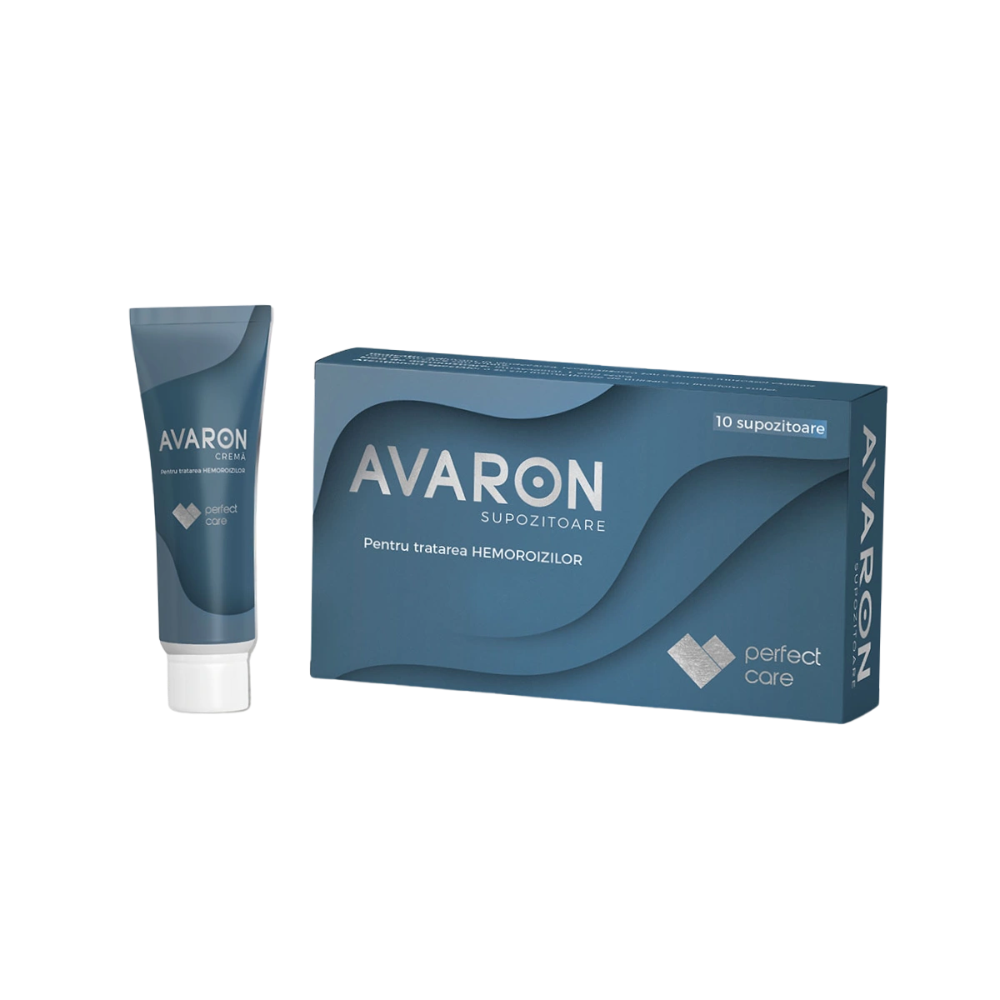
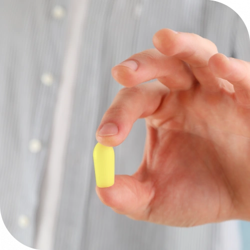
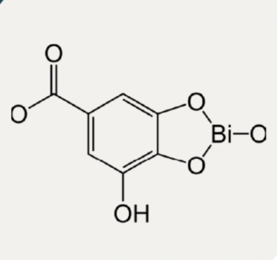
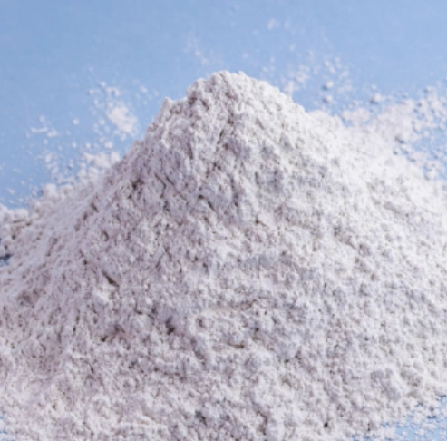
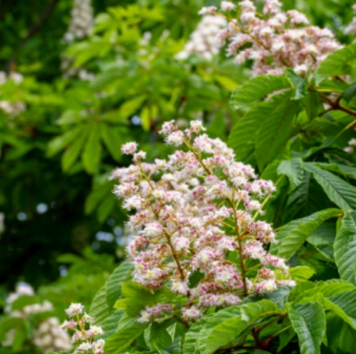
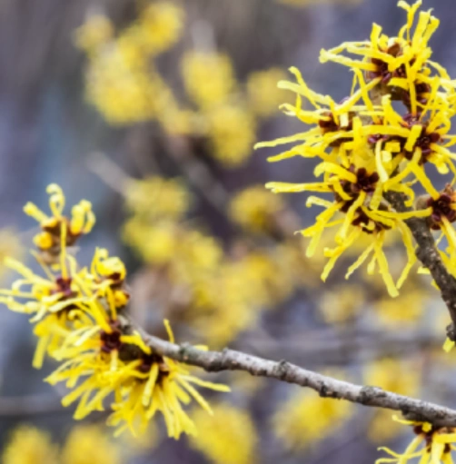

Заживление
Способствует восстановлению повреждённых и раздражённых тканей.
AVARON — медицинское изделие в форме суппозиториев или крема, используемое как вспомогательное средство при кратковременном симптоматическом лечении внутренних геморроидальных узлов, анального и перианального зуда, анита, перианита, проктита, криптита, папиллита, анальных и перианальных трещин.
Средство способствует заживлению, реэпителизации и защите повреждённой, раздражённой или воспалённой аноректальной слизистой. Обе формы хорошо переносятся кожей.

Способствует восстановлению повреждённых и раздражённых тканей.
Поддерживает естественное обновление слизистой оболочки.
Помогает снизить раздражение и защитить чувствительную область.

Благодаря смазывающим, противовоспалительным, венотоническим, вяжущим и восстанавливающим свойствам AVARON помогает уменьшать локальную боль и воспаление, поддерживает регенерацию повреждённых тканей, уменьшение кровотечения, устойчивость сосудистых стенок и нормальную функцию анальной слизистой.



